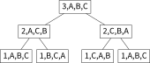

Tower of Hanoi
1. Problem statement
Compute the sequence of steps, which each step as a 2-letter string in the
format <disc_id><from><to>, that solve a given Tower of Hanoi problem of \(N\)
discs on 3 rods (Aziz et al., 2018, p. 233).
2. Insights
2.1. Background
The goal is to step the tower of discs from rod 1 to rod 2 (it actually doesn't matter whether rod 2 or 3 is the final rod, because of symmetry), in the same top-down order (smallest disc on top, largest disc on the bottom), with the fewest number of steps. A larger disc may not be placed on top of a smaller one.
2.2. Recurrence
Note the following:
- If there are no discs, 0 steps can be made.
- If there is 1 disc, only 1 step is needed.
- If there are 2 discs, 3 steps are needed.
- If there are 3 discs, 7 steps are needed.
- For \(n\) discs, \(2^{n-1}\) steps are needed.
Why is this so? Basically, the disc at the bottom (largest disc) needs only 1 step because it must (by definition) only go onto a rod with no discs on it (because all other discs are smaller than this one). And all previous discs must be stepd before the largest disc can be stepd.
Let's label the rods A, B, C. For the case of 2 discs (let's call them 1 and 2), it plays out (top to bottom) like this:
1
2
- - - Step 0
A B C
--------------------------------------------------------
2 1
- - - Step 1 = AC (Move subtower (disc 1) to other rod)
A B C
--------------------------------------------------------
2 1
- - - Step 2 = AB (Move largest disc into place)
A B C
--------------------------------------------------------
1
2
- - - Step 3 = CB (Move subtower (disc 1) to final rod)
A B C
Here's the visual record of 3 discs:
1
2
3
- - - Step 0
A B C
--------------------------------------------------------
2
3 1
- - - Step 1 = AB (Move subtower 1+2 to other rod)
A B C
--------------------------------------------------------
3 1 2
- - - Step 2 = AC (Move subtower 1+2 to other rod)
A B C
--------------------------------------------------------
1
3 2
- - - Step 3 = BC (Move subtower 1+2 to other rod)
A B C
--------------------------------------------------------
1
3 2
- - - Step 4 = AB (Move largest disc into place)
A B C
--------------------------------------------------------
1 3 2
- - - Step 5 = CA (Move subtower 1+2 to final rod)
A B C
--------------------------------------------------------
2
1 3
- - - Step 6 = CB (Move subtower 1+2 to final rod)
A B C
--------------------------------------------------------
1
2
3
- - - Step 7 = AB (Move subtower 1+2 to final rod)
A B C
Notice that the first 3 steps for the case of 3 discs are the same 3 steps needed for the entire solution of the case of 2 discs. So the solution for 3 discs is really just: "step tower of 2 discs to another rod" + "step the largest disc to its final position" + "step tower of 2 discs to the final rod", or
\begin{align*} S(n) &= S(n-1) + 1 + S(n-1) \\ &= 2*S(n-1) + 1 \end{align*}where \(S(n)\) means the number of steps needed. If we throw in the base case of \(S(0) = 0\), we arrive at the following recurrence:
\begin{equation} S_n = \begin{cases} 0 & \text{if } n = 0 \\ 2 * (S_{n - 1}) + 1 & \text{if } n > 0. \end{cases} \end{equation}In summary, if we want to move \(n\) discs, we must move the tower made up of \(n-1\) discs over to another rod, then again to the final rod. These smaller \(n-1\) discs are free to move (use any of the rods) as they are all smaller than the largest disc.
3. Solution
3.1. Recursive
The key here is to encode the "move subtower to other rod", "move largest disc" and "move subtower to final rod" actions into a recursive function. The "move largest disc" is our base case where the recursion ends.
def recursive(discs_to_move: int): result = [] def record_steps(discs: int, rod_start: str, rod_final: str, rod_other: str): if not discs: return # Move subtower from the starting rod to the other rod. "First leg" of # recursion. record_steps(discs - 1, rod_start, rod_other, rod_final) # Move largest disc to final rod, and record this step. We reuse "discs" # as the disc "id". "Largest" here depends on context. result.append(str(discs) + rod_start + rod_final) # Move subtower from the other rod to the final rod. "Second leg" of # recursion. record_steps(discs - 1, rod_other, rod_final, rod_start) # Record the steps! record_steps(discs_to_move, 'A', 'B', 'C') return result
Another way to look at this is that we have a binary tree of recursive calls, where we can trace the execution of the calls by doing an in-order traversal.

Figure 1: Recursive call tree of function arguments for record_steps().
We can use a binary tree to model the trace,
because we recurse twice, in the first and second legs. And our model uses
in-order traversal because our code to do actual work (the "moving" of the disc,
which we record into the result array), is done between the two recursive
calls, just like how in-order traversal visits after the left subtree is
visited first (but before right subtree).
3.2. Iterative
Here we simulate the recursive approach by emulating a function call stack. We very precisely trace the execution of the recursive function, but do it in iterative fashion by simulating the call stack with an explicit stack. When we need to recurse, we push into the stack a "RecursiveCall".
def iterative(discs_to_move: int): result = [] def record_steps(discs: int, rod_start: str, rod_final: str, rod_other: str): class RecursiveCall(NamedTuple): discs: int rod_start: str rod_final: str rod_other: str callstack: List[RecursiveCall] = [] while discs or callstack: # Simulate a recursive call. Initially, this loop simulates the # "first leg" of recursion. Later, it will simulate the second leg # as well. while discs: rc = RecursiveCall( discs, rod_start, rod_final, rod_other, ) callstack.append(rc) rod_final, rod_other = rod_other, rod_final discs -= 1 # "Execute" the function call at the top of the stack. We don't # really care how the function call got to the top --- we just # execute it to make our "CPU" make progress. exec_me = callstack.pop() result.append(str(exec_me.discs) + exec_me.rod_start + exec_me.rod_final) # The combination of this stanza and the above while loop just above # will simulate the second leg of recursion. Recurse if exec_me.discs > 0: discs = exec_me.discs - 1 rod_start = exec_me.rod_other rod_final = exec_me.rod_final rod_other = exec_me.rod_start record_steps(discs_to_move, 'A', 'B', 'C') return result
Consider the example where we call iterative(3). The first thing we do is
simulate the recursion down to the leftmost node in the call tree (as
illustrated earlier in Figure 1). The call stack at this point looks like this:
1,A,B,C 2,A,C,B 3,A,B,C
Then we pop the stack to process 1,A,B,C and execute it.
2,A,C,B 3,A,B,C
Now we are in the next iteration for the outer while loop. We pop the stack to process
2,A,C,B and execute it. Our stack looks like
3,A,B,C
Now we are in the next iteration for the outer while
loop again. But now we execute the inner while loop because our last execution
set discs to \(2 - 1 = 1\), and so we create the next recursive call, 1,B,C,A
and add it to the stack. Now our stack looks like
1,B,C,A 3,A,B,C
and we pop the stack and execute it. And so on and so forth.
Overall it's a bit tricky, but the key ideas are:
- simulate a function call with an explicit stack,
- process the stack once in the outer loop's iteration to make progress,
- have another nested loop to build up the stack again to simulate further recursive calls, and
- modify the "base case detector" variable, in our case the
discsvariable, as needed to control the growth of recursion.
4. Tests
from typing import List, NamedTuple import unittest solution class Test(unittest.TestCase): test_cases if __name__ == "__main__": unittest.main(exit=False)
4.1. Basic tests
def test_recursive(self): self.assertEqual(recursive(0), []) self.assertEqual(recursive(1), ["1AB"]) self.assertEqual(recursive(2), ["1AC", "2AB", "1CB"]) self.assertEqual(recursive(3), ["1AB", "2AC", "1BC", "3AB", "1CA", "2CB", "1AB"]) def test_iterative(self): self.assertEqual(iterative(0), []) self.assertEqual(iterative(1), ["1AB"]) self.assertEqual(iterative(2), ["1AC", "2AB", "1CB"]) self.assertEqual(iterative(3), ["1AB", "2AC", "1BC", "3AB", "1CA", "2CB", "1AB"]) # Do the recursive and iterative solutions agree with each other? def test_cross_check(self): for i in range(8): self.assertEqual(recursive(i), iterative(i))